- 发帖数量：7 条（星球「南半球聊财经」星主 Jason不跪，用「只看星主」筛选）
- 时间范围（美西，PDT）：2026-10-17 12:13 – 14:14（对应接口时间 2026-10-18 03:13 – 05:14 +0800）
- 本次起算点：晚于 2026-10-17T10:02:18.835+0800 的帖子（正好卡在起算点的那一条属于上一期，未收录）
- 读法提示：这 7 条里，帖 1–3 是 Jason 转述摩根大通（JPM）、高盛的研报摘要（各附一份 PDF，本次只能读到帖子正文和配图，PDF 全文没有读）；帖 4–6 转述 Bloomberg 和 ZeroHedge 的文章；帖 7 是他自己写的一篇星球长文，借《雍正王朝》讲财政。数据都来自帖子和配图，我没有独立核对；凡是我自己补充的背景或推测，会明确写"我的补充 / 我的推测"。
今日要点速览
今天的主线是"钱的压力在各国轮流出现"：美国是债务利息、油价和医疗成本把财政和家庭同时挤紧，中国是消费盈利还在下修、科技股估值被打回原形，日本则是家庭存款开始搬家，俄乌制裁松绑背后又是一场油价政治。
按顺序看：帖 1、2 讲中国的内需与增长——JPM 说消费股的盈利下修还没结束、"便宜"和"高股息"都不够用，高盛的实时预测把三季度 GDP 钉在 4.2%，靠出口撑着、消费者信心回落；帖 3 讲日本——家庭金融资产约 2,519 万亿日元（约 16 万亿美元）正从存款流向国债和股票；帖 4 用美债外资持仓、CBO 债务比率、汽油多花的 830 亿美元和医疗成本四张图，讲美国财政与家庭的"双重挤压"；帖 5 讲中国 AI 概念股——科创 50 自 6 月底以来跌近 40%，估值仍是纳斯达克的两倍；帖 6 讲特朗普豁免对俄新制裁，Jason 追问"既然只能小量缓解油价，为什么还要做"；帖 7 用康熙和雍正的一段对话收尾：税基被免税特权掏空，谁来动手改革，才是财政问题的核心。
读完整组可以抓住一个共同问题：当钱变紧时，谁在付账、谁在被保护、谁有动力改变现状？ 这也是第 7 篇长文真正想问的。
帖 1 ｜ JPM：上海路演听到的中国消费真实情绪——盈利下修还没完（12:13 PDT）
摩根大通分析师在上海见完一圈基金经理后发现：大家对中国消费股依然谨慎——"便宜"不是买入理由，要等盈利预测不再被下调、或经营改善开始加速才会回来；而"高股息"也不再是万能钥匙，必须同时看盈利稳不稳、现金流够不够、回报可不可持续。读全文收起
帖子原文
JPM： 分析师在上海与机构投资者交流后，对市场真实情绪的一次整理。中国消费板块的盈利预期下修周期尚未结束。低估值本身不足以让投资者放心，市场需要看到盈利预测企稳，或者经营改善速度开始加快，才愿意重新增加配置。投资者担心市场一致预期尚未充分反映三个压力：需求疲软、促销竞争，以及正在出现的成本上涨。投资者不再简单寻找高股息公司，而是要求三个条件同时成立：盈利在保守假设下仍然稳定、现金流足以支持分红、股东回报具有可持续性。 标签：经济数据 附件：《China Consumer_ Shanghai Marketing Feedback.pdf》（约 415 KB，本次未读取全文）

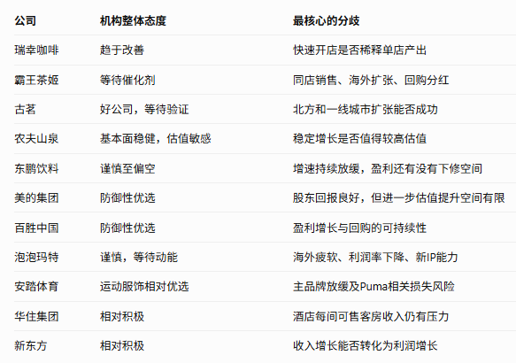
背景与关键数据
- 这份材料是什么：标题里的 "Marketing Feedback" 指券商分析师带着研究观点去见客户（路演），回来整理"客户在问什么、担心什么"。所以它是情绪读数，不是公司业绩数据；它告诉你"钱的心态"，不告诉你"企业的利润是多少"。
- 盈利预期下修周期（earnings revision cycle）：分析师对一家公司未来利润的预测，一次次往下调。股价更看"预测的方向"而不是绝对水平，所以只要预测还在下调，股价就很难持续上涨。图 1 的原文说，美的、海尔、古茗等公司最近下调了业绩指引，"再次印证了这种担忧"。
- 低估值不等于便宜：市盈率（PE）= 股价 ÷ 每股利润。如果利润还会继续下滑，今天看着 10 倍的 PE，利润再降 30% 之后实际就是约 14 倍（10 ÷ 0.7）。这就是"价值陷阱"——看起来便宜，其实分母在缩水。
- "二阶导数改善（second derivative）"：指"变差的速度变慢"。例如收入同比从 −10% 变成 −5%，水平上还在下降，但边际在好转。研报说，投资者买回来的前提是"盈利预测企稳"或"二阶改善"。
- 三个压力：
- 需求疲软：消费者少花钱、换购变慢；
- 促销竞争：同行靠打折、送券抢份额，把利润率压低（我的补充：咖啡、茶饮、外卖、乳饮等赛道近年价格战都很激烈）；
- 成本上涨：图 1 里写到 2026 下半年到 2027 年的成本通胀来自石化产品和厄尔尼诺（石化影响包装材料等，厄尔尼诺影响农产品原料）。康师傅（Tingyi）、统一企业中国（UPC）、万洲国际（WH Group）等被点名担心"分红会被成本吞掉"。
- 高股息的三个条件：①在保守假设下盈利依然稳定；②现金流足以覆盖分红；③股东回报可持续。直白地说，就是"分红不是靠借钱或吃老本"。研报举的正面例子：美的的股东回报、百胜中国的资本回报可见度；华住、新东方则因为"执行力和相对可防御的增长"受关注。
- P/B 低于 1 倍与私有化：图 1 提到，百威亚太（Bud APAC）和李宁（Li Ning）此刻做空被认为有风险，因为公司有可能以 1 倍或更低的市净率被私有化。市净率 P/B = 市值 ÷ 净资产；在 1 倍附近，大股东回购、拿回去私有化的成本不高，等于给股价垫了一块"地板"，空头容易被逼空。
图片解读
图 1（研报首页，JPM Asia Pacific Equity Research，2026 年 10 月 16 日，标题 China Consumer – Shanghai Marketing Feedback）
- 页首摘要：上海投资者会议显示，对中国消费股的情绪依然谨慎，虽然也有从科技股分散出来的兴趣。核心争论是"盈利预期是否已经充分下修"：投资者普遍认为还有下行空间，需要看到盈利预测企稳或经营动能改善才会加仓。选股越来越偏向"盈利有韧性 + 分红靠得住"，单靠低估值不够。
- 被问得最多的公司观点：美的（防御性）、农夫山泉（稳健但估值敏感）、瑞幸（改善中）、古茗（好公司但等执行验证）、东鹏饮料（谨慎到偏空，担心进一步下行）、泡泡玛特（谨慎，等动能）、安踏（相对偏好但对盈利谨慎）、华住（建设性，近期 RevPAR 有争议）。
- 两条加粗要点：盈利下修周期没结束；"盈利韧性 + 股息"依然是首选组合。
- 右侧是分析师名单和联系方式（不重要）。页面底部还列出了同系列的旧报告："12 Oct 2026 Expert Call Takeaways – Golden Week Reality Check"（国庆假期的现实检验）和 "8 Oct 2026 "Davis Double Kill" decomposed – rotation setup"（把"戴维斯双杀"拆开来看）。
图 2（中文表格：各公司的机构态度和最核心分歧）
画的是 11 家公司，三列：公司、机构整体态度、最核心的分歧。我转写如下（来源帖子没注明，大概率是研报内页内容或 Jason 整理）：
| 公司 | 机构整体态度 | 最核心的分歧 |
|---|---|---|
| 瑞幸咖啡 | 趋于改善 | 快速开店是否稀释单店产出 |
| 霸王茶姬 | 等待催化剂 | 同店销售、海外扩张、回购分红 |
| 古茗 | 好公司，等待验证 | 北方和一线城市扩张能否成功 |
| 农夫山泉 | 基本面稳健，估值敏感 | 稳定增速是否值得享受高估值 |
| 东鹏饮料 | 谨慎至偏空 | 增速持续放缓，盈利还有没有下修空间 |
| 美的集团 | 防御性优选 | 股东回报良好，但进一步估值提升空间有限 |
| 百胜中国 | 防御性优选 | 盈利增长与回购的可持续性 |
| 泡泡玛特 | 谨慎，等待动能 | 海外疲软、利润率下降、新 IP 能力 |
| 安踏体育 | 运动服饰相对优选 | 主品牌放缓及 Puma 相关损失风险 |
| 华住集团 | 相对积极 | 酒店每间可售客房收入仍有压力 |
| 新东方 | 相对积极 | 收入增长能否转化为利润增长 |
怎么读这张表：态度最好的是"防御型 + 分红确定"（美的、百胜中国），其次是"有明确执行路径"的（瑞幸、华住、新东方），最差的是"增速放缓但估值没降够"的（东鹏）。分歧列几乎都是同一类问题：增长还能不能持续、会不会稀释利润。
为什么重要 / 对市场和经济的含义
- 消费股是中国内需的"体温计"。如果连机构资金都说"盈利下修周期没完"，意味着居民和企业的支出还没有真正回暖——这和帖 2 里高盛说的"消费者信心边际回落"互相印证。
- "从科技股分散出来"遇到了"消费也不接盘"（我的推测）：图 1 首段说投资者对"分散出科技"有兴趣，但对消费股依然谨慎。结合帖 5（科创 50 自 6 月底暴跌近 40%），资金处于"逃离高估值科技、却找不到明确避风港"的状态，最后更倾向于"盈利稳 + 现金流稳 + 分红稳"的防御品种。
- 风格含义：市场在为"确定性"付钱，而不是为"故事"付钱。红利、现金流、回购这类词越来越重要。
- Jason 把这条放在今天第一条，我的猜测是想为后面几条铺垫"全球资金都在重新定价风险"这个背景。
延伸知识
- 戴维斯双杀 / 双击：股价 = 利润 × 估值倍数。"双杀"是利润下降、估值倍数也同时下降，股价被两头夹击；"双击"则相反，利润和估值一起涨。研报页脚那篇 "Davis Double Kill decomposed" 就是在拆这件事：到底有多少跌幅来自利润下调、多少来自估值被压缩。类比：卖房子时，房子变小了（利润降）、每平米单价也降了（倍数降），总价自然跌得更狠。
- 股息陷阱（dividend trap）：股息率 = 每股分红 ÷ 股价。股价跌得越多，股息率"看起来"越高，但如果分红是靠借钱或透支现金流维持的，一旦削减分红，股价会再被砸一次。所以机构才会盯"分红能不能被现金流覆盖"。
帖 2 ｜ 高盛：中国三季度 GDP 实时预测维持 4.2%（12:20 PDT）
高盛用高频数据"边收边估"的方法，认为中国 2026 年三季度 GDP 同比增长约 4.2%：出口很强，把汽车生产的疲软抵消了；港口货柜量比去年同期高很多，但消费者信心在往下走——典型的"外强内弱"。读全文收起
帖子原文
高盛： 对2026年第三季度GDP同比增速的实时预测维持在 4.2%，出口强劲抵消了汽车生产疲软的拖累。港口集装箱吞吐量仍显著高于去年同期，而消费者信心边际回落。 标签：经济数据 附件：《China Economic Activity and Policy Tracker_ Oct 16.pdf》（约 1.3 MB，本次未读取全文）
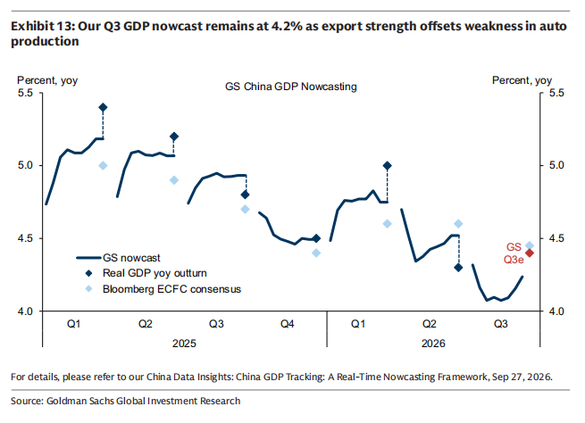
背景与关键数据
- 实时预测（nowcast）：官方 GDP 要等季度结束后才公布，nowcast 是不等官方数字，把能拿到的最新数据（出口、港口吞吐、汽车产量、用电、消费者信心等）喂进模型，滚动估算当季 GDP。类比：期末考试还没出分，你根据平时小测和作业成绩估算总分，每次有新成绩就更新一次估计。美国有亚特兰大联储的 GDPNow 做同样的事。
- 同比（yoy）：和去年同一季度比。4.2% 的意思是"比 2025 年三季度多长 4.2%"。
- 出口强、汽车产量弱：
- 出口是外部需求在拉动；
- 汽车产业链很长（钢铁、零部件、物流、消费信贷都牵涉），汽车产量弱通常意味着制造业里一块重要的内需/行业调整还没过去（我的补充：具体原因帖子没写，可能与国内价格战、政策刺激退坡等有关，这只是一般性猜测）。
- 港口集装箱吞吐量：最直接的"出口货量"高频指标——柜子装得多、进出港多，说明贸易活动旺。"仍显著高于去年同期"就是出口数据强的佐证。
- 消费者信心：调查类指标，反映居民对收入和未来的看法；信心回落通常领先于消费支出放缓。
图片解读
图 1（高盛 Exhibit 13：Our Q3 GDP nowcast remains at 4.2% as export strength offsets weakness in auto production）
- 坐标轴：纵轴是 GDP 同比增速（%），范围 4.0–5.5；横轴按季度，从 2025 年 Q1 到 2026 年 Q3。
- 三个图例：
- 粗深蓝线 = GS nowcast（高盛实时预测，每个季度从头滚动一段）；
- 深蓝菱形 = Real GDP yoy outturn（官方实际公布值）；
- 浅蓝菱形 = Bloomberg ECFC consensus（彭博经济学家一致预期）。
- 我从图上读出的数值（估计值，以原图为准）：
| 季度 | 实际值（深蓝菱形） | 一致预期（浅蓝菱形） | 对比 |
|---|---|---|---|
| 2025 Q1 | ≈5.4% | ≈5.0% | 高于预期 |
| 2025 Q2 | ≈5.2% | ≈4.9% | 高于预期 |
| 2025 Q3 | ≈4.8% | ≈4.7% | 略高 |
| 2025 Q4 | ≈4.5% | ≈4.4% | 略高 |
| 2026 Q1 | ≈5.0% | ≈4.6% | 高于预期 |
| 2026 Q2 | ≈4.3% | ≈4.6% | 低于预期 |
| 2026 Q3 | 红点 GS Q3e ≈4.4%；nowcast 末端 ≈4.2% | ≈4.5% | 预测略低于一致预期 |
- 读图要点：
- 2025 年到 2026 年一季度，实际值连续五个季度好于市场一致预期，直到 2026 年 Q2 才首次"失望"（4.3% 对 4.6%）；
- 2026 年 Q3 的实时预测线先从约 4.3% 一路滑到约 4.07%，再回升到约 4.24%，说明数据在中途明显转弱后又有所修复；
- 图中红色菱形 "GS Q3e" 看起来在 4.4% 附近（我的读法：这是高盛的正式季度预测，比 nowcast 的 4.2% 略高），而 nowcast 线终点在 4.2%。
为什么重要 / 对市场和经济的含义
- 增速在慢下台阶：从 2025 年 Q1 的 5.4%，到 2026 年 Q2 的 4.3%，再到 Q3 的约 4.2%，是一路缓降，而不是急刹车。
- 增长结构偏"外强内弱"：出口 + 港口量好，消费者信心差，汽车弱——这和帖 1 里"消费股盈利预期仍在下修"相互呼应：增长数字尚可，但居民和内需部门的获得感不足。
- 预期差：如果官方最后真的是 4.2%，会比市场一致预期（约 4.5%）低 0.3 个百分点，这是对风险资产不太友好的"小失望"。但 nowcast 本身有误差（从图上看，历史上和实际值差 0.2–0.3 个百分点很常见），不要把 4.2% 当成确定数字。
- Jason 可能想让读者对照：强的出口 + 弱的消费 = 为什么消费类股票的盈利预期还在往下调。
延伸知识
- 高频指标：指日度、周度、月度就能拿到的数据，比季度 GDP 快得多。经典例子是"克强指数"——用用电量、铁路货运量和银行贷款三项来估计经济活动，不看官方 GDP。nowcast 就是把一大堆高频指标系统化地汇总。
- 怎么读 GDP 数据：别只看一个总数，看"三驾马车"——出口、投资、消费哪个在发力。同样 4.2%，靠出口拉动和靠消费拉动，对企业利润、居民感受、政策方向的含义完全不同。
帖 3 ｜ JPM：日本家庭正在把银行存款搬进国债、股票和基金（12:28 PDT）
摩根大通认为，日本正在经历一场"家庭资产大轮动"：约 2,519 万亿日元（约 16 万亿美元）的家庭金融资产正从银行存款流向国债、股票和基金，这会同时改变日本的消费、企业行为和银行盈利。读全文收起
帖子原文
JPM： 日本家庭正在把过去长期沉淀在银行存款中的资金，逐渐转移到国债、股票和投资基金。摩根大通认为，这可能改变日本未来的消费、企业融资、资本市场，甚至整个银行体系的竞争格局。三大投资主题：1）居民消费复苏。 工资上涨叠加利息、股息及资本利得增加，支持2027年以后的消费股。2）企业资本效率改善。 企业重组、并购、增长投资和股东回报，推动ROE、ROIC上升。3）大型银行利润率提高。 存款竞争格局改变、贷款风险重新定价、净息差扩大，可能推动日本大型银行ROE突破15%。截至2026年6月底，日本家庭拥有约2,519万亿日元金融资产，相当于日本政府预测2026财年GDP的约3.6倍、政府债务的约1.6倍。 为什么以前日本人不愿意投资？在长期零利率、通缩或低通胀的环境下，持有现金并不是特别糟糕的选择。当物价不涨甚至下跌时，现金购买力相对稳定；而股票和其他风险资产存在价格波动。但当日本进入正利率和持续通胀的环境，家庭就需要重新考虑持有大量现金的机会成本。摩根大通认为，这个过程已经开始。2025年，日本家庭现金与存款占比七年来首次跌破50%；到2026年6月进一步降至44.9%。而2026财年上半年，即4月至9月，日本面向个人的国债销售额已超过5万亿日元，接近2025财年全年的6万亿日元。 日本企业部门也正在经历一次结构性转型。过去，日本企业长期保持较高的储蓄水平，许多企业不愿意进行大规模资本投资，而是积累现金、持有交叉股权、维持相对保守的资产负债表。报告指出，2020年前后，企业投资开始增加，企业部门的资金盈余有所收窄。2023年通缩结束、进入新的通胀阶段之后，日本资本开支周期进入扩张阶段。但2023—2025财年，企业资本开支仍主要用于维护和更新现有设备。摩根大通认为，下一阶段将转向增长型投资，包括企业重组、并购、业务剥离，以及通过优化资产配置提升ROE和ROIC。 标签：其他国家经济 附件：《Japan Equity Strategy_ The great rotation of household assets_ A new ecosystem and investment opportunities.pdf》（约 1.2 MB，本次未读取全文）
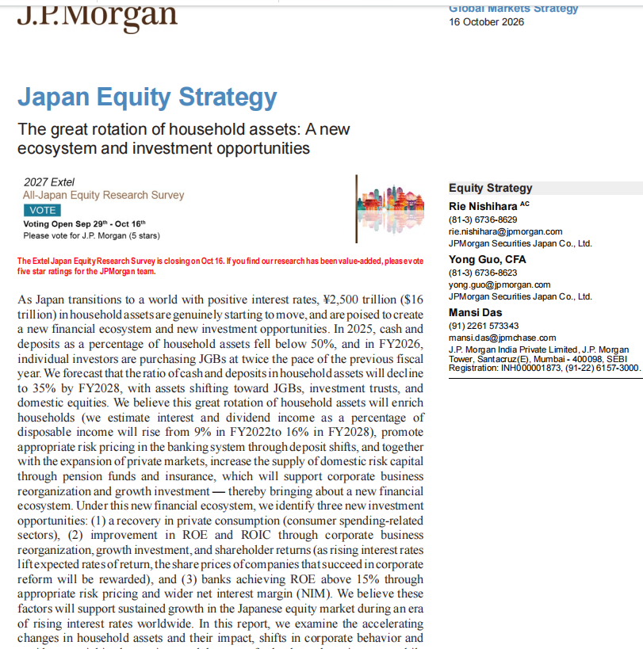
背景与关键数据
- 规模有多大：2,519 万亿日元，约等于日本政府预测的 2026 财年 GDP 的 3.6 倍、政府债务的 1.6 倍。图中给出的美元数字是约 16 万亿美元（我的补充：2,500 万亿日元对应 16 万亿美元，隐含汇率约 156 日元/美元）。这是一个巨大的"水库"。
- 现金占比正在下降：
- 2025 年，现金和存款占家庭金融资产的比例七年来第一次跌破 50%；
- 2026 年 6 月降到 44.9%；
- JPM 预测到 2028 财年降到 35%（图中原文）。
- 个人买国债加速：2026 财年上半年（4–9 月），面向个人的国债销售额超过 5 万亿日元，已接近 2025 财年全年的 6 万亿日元，图中说是"上一年同期节奏的两倍"。
- 为什么过去不动、现在动：
- 过去是零利率 + 通缩/低通胀，现金放着不亏购买力，股票反而要承担波动，所以"躺平"是理性的；
- 现在是正利率 + 持续通胀，实际利率 = 名义利率 − 通胀率，如果存款利率 0.5%、通胀 3%，现金每年实际贬值约 2.5%。持有现金的"机会成本"变高，人们自然开始挪钱。
- 企业端：
- 过去企业囤现金、持有交叉股权（互相持股以求稳定），资产负债表很保守；
- 2020 年前后企业投资开始增加，2023 年通缩结束后资本开支周期扩张，但 2023–2025 财年的钱主要花在"维护更新"上；
- 下一阶段转向"增长型投资"：重组、并购、剥离非核心业务，目标是提高 ROE（净资产收益率）和 ROIC（投入资本回报率）。
- 银行端：存款不再是"便宜的免费资金"，银行要为留住存款付更高利息；同时贷款定价更反映风险，净息差（NIM）= 贷款收益率 − 存款成本 扩大，推动大型银行 ROE 上升，JPM 认为可超过 15%。
图片解读
图 1（JPM Japan Equity Strategy 首页，2026 年 10 月 16 日，标题 "The great rotation of household assets: A new ecosystem and investment opportunities"）
- 摘要首段：日本向正利率世界转型，约 2,500 万亿日元（约 16 万亿美元）的家庭资产真正开始流动；2025 年现金存款占比跌破 50%；2026 财年个人买国债的速度是上一财年的两倍；预测 2028 财年现金存款占比降至 35%，资产转向国债、投资信托和日本国内股票。
- 关键预测：利息和股息收入占可支配收入的比例，将从 2022 财年的 9% 升到 2028 财年的 16%——也就是家庭"靠资产赚钱"的部分几乎翻倍，这是支撑消费复苏论的核心数据。
- 三大投资机会：①居民消费复苏；②企业通过重组、成长投资和股东回报提升 ROE/ROIC；③银行在合理的风险定价和更宽的净息差下 ROE 超过 15%。
- 版面上还有一个 "2027 Extel All-Japan Equity Research Survey" 的拉票广告，请客户给 JPM 团队投五星——说明这是一份卖方研报，带有营销属性，读的时候要意识到作者的立场是"这一轮会很好"。
为什么重要 / 对市场和经济的含义
- 对日本本身：家庭资金进入股市和国债，会给国内资产提供稳定的买盘，也会让"财富效应"回到消费上；企业改革 + 银行利润上升是对应的受益链。这是日本从"失落的三十年"向"正常化"的一块拼图。
- 对全球资金流（我的推测/串联）：日本是美债最大的外国持有人。帖 4 显示日本 8 月把美债持仓减少了 360 亿美元（降到约 1.1 万亿美元，2024 年 12 月以来最低），并且在日元跌到四十年低点时入场买日元。如果家庭资金越来越留在国内买日本国债和股票，加上官方为了支撑日元不得不卖美元资产，美债的"日本买盘"可能越来越弱——这个效应今天的两篇帖子在不同角度被点到了。
- 和昨天的对照：昨天的帖子里提到，中国居民的钱"在账上、没流进市场"；日本居民则是钱开始动了。同样是"储蓄大国"，一个在搬家、一个在观望。
延伸知识
- Great Rotation（大轮动）：原本是投资界在 2013 年前后用来描述"资金会从债券大举转向股票"的说法；日本这次是更基础的一层——从"存款"转向"有价证券"。要点是：当一个社会的储蓄习惯改变，影响的是整个金融体系的结构，不只是几只股票。
- 东京证交所 1 倍市净率改革（我的补充）：2023 年东证要求市净率长期低于 1 倍的上市公司提出改善资本效率的计划，催生了日本公司回购、分红、拆解交叉持股的浪潮。研报里的 "ROE/ROIC 提升" 主题就是这条线的延续。类比：公司账上放着很多现金不动，就像家里把大量钱放在零利率的活期里；改革要求"要么拿去投资，要么还给股东"。
帖 4 ｜ Bloomberg：8 月美债外资持仓回升，利息账单是财政部的头疼事（12:43 PDT）
8 月美债的外国持仓从近一年低点回升，但回升靠的是比利时、加拿大这类"托管中心"，中国和日本在减；与此同时美国政府的平均借款利率已经是五年前的两倍多，再加上债务占 GDP 比重逼近历史新高、汽油和医疗费用也在挤压家庭——政府和家庭的账单都在变厚。读全文收起
帖子原文
bloomberg： 8月份美债海外持有**量从近一年低点回升，**中国大陆目前名义上持有5910亿美元，单月降低270亿美元；而比利时和加拿大这两个疑似马甲，在8月增加了580亿美元；另外英国的持有量首次超过了万亿美元。 对于海外持有者来说，目前美国支付的利息相当可观。这对贝森特来说是头疼。截至9月底，政府对可流通国债支付的平均利率为3.52%，是五年前1.47%的两倍多。根据TD证券的计算，收益率曲线上调100个基点将使2027年的利息成本增加3100亿美元。目前稍微宽慰的是，美国名义GDP尚可，预估二季度有6.3%，高于美债收益率。但名义GDP中的通胀，正在侵蚀家庭部门 标签：其他国家经济
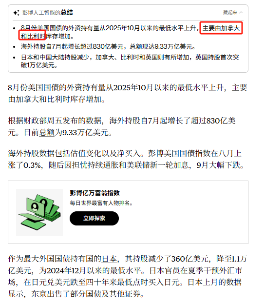
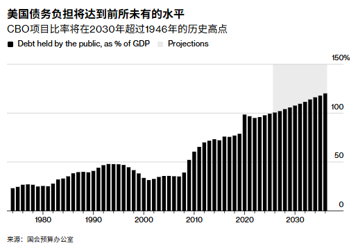
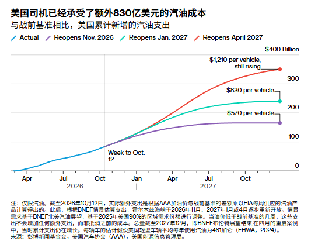
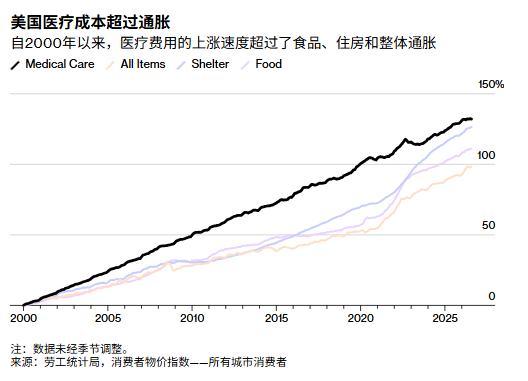
背景与关键数据
- 这份数据是什么：美国财政部每月发布的 TIC 报告（Treasury International Capital），统计外国投资者持有多少美国证券，滞后大约六周，所以周五（10 月 16 日）公布的是 8 月数据。
- 持仓量 ≠ 净买入：Bloomberg 原文特别说明，持仓数字包含估值变化和净买入两部分。8 月 Bloomberg 美国国债指数涨了 0.3%，所以账面持仓也被价格上涨"垫高"；9 月国债大跌（因为担心通胀持续和美联储新一轮加息），下个月公布的 9 月数据，估值部分可能转负。
- 总量：外资持有美债约 9.33 万亿美元，自 7 月以来增加超过 830 亿美元。
- 各国变化：
- 中国大陆：名义持有 5,910 亿美元，单月减少 270 亿美元；
- 日本（最大外国持有国）：减少 360 亿美元，降到约 1.1 万亿美元，为 2024 年 12 月以来最低；日本官员在夏季干预了外汇市场，在日元兑美元跌到四十年来最低点时买入日元，并卖出了部分国债和其他证券；
- 比利时 + 加拿大：8 月合计增加约 580 亿美元；
- 英国：持仓首次突破 1 万亿美元。
- 为什么说"名义上"和"疑似马甲"：美债是通过托管机构持有的，数据按托管地记录，而不是按最终持有人记录。比利时有欧洲清算所（Euroclear），英国伦敦是全球托管和对冲基金中心，所以这些国家的持仓大，并不意味着当地人在买。"疑似马甲"是 Jason 的说法（帖子里没有 Bloomberg 的原话支持，属于他的推测），常见的看法是中国等国可能经由第三地托管，但这无法从这份数据直接证实。
- 利息成本：
- 截至 9 月底，美国政府对可流通国债支付的平均利率是 3.52%，五年前是 1.47%，翻了一倍多；
- 原因是国债要不断"滚动续借"：低息的旧债到期、换成新发的高息债，平均利率就会慢慢爬向市场利率；
- TD 证券计算：收益率曲线整体上移 100 个基点（1 个百分点），2027 年的利息成本会增加 3,100 亿美元。
- 名义 GDP 6.3% > 美债收益率：名义 GDP 是没扣除通胀的经济总量增速。只要"经济增速 > 借款利率"，债务占 GDP 的比重就不容易失控——这是帖子里说的"稍微宽慰"。但帖子没说明 6.3% 是同比还是年化环比，使用时要小心。最后一句"名义 GDP 中的通胀，正在侵蚀家庭部门"（原文到这里结束）：名义增速里很大一块是涨价，政府账面好看，家庭实际购买力却在下降。
图片解读
图 1（Bloomberg 文章中文版截图）
- 顶部是"彭博人工智能的总结"：8 月美债外资持有量从 2025 年 10 月以来的最低水平上升，主要由加拿大和比利时库存增加（这一句在截图里被红框标出，Jason 强调了这两个国家）；海外持股自 7 月起增长超过 830 亿美元，总额 9.33 万亿美元；日本和中国大陆持股减少，加拿大、比利时和英国则有所增加，英国持股首次突破 1 万亿美元。
- 正文补充：持股数据包含估值变化及净买入；彭博美国国债指数 8 月上涨 0.3%，随后因担忧持续通胀与美联储新一轮加息，9 月大幅下跌；日本减持 360 亿美元，日本官员夏季干预外汇市场，在日元兑美元跌至四十年来最低点时买入日元；日本上月的数据显示，东京卖出了部分国债及其他证券。
- 中间夹着一个"彭博亿万富翁指数"的广告卡片，与内容无关。
图 2（CBO 债务图：美国债务负担将达到前所未有的水平）
- 标题：CBO（美国国会预算办公室）预计，公众持有的联邦债务占 GDP 比率将在 2030 年前后超过 1946 年的历史高点。
- 画法：黑色柱子是"公众持有债务占 GDP 的百分比"（Debt held by the public, as % of GDP），横轴从 1975 年到 2030 年代中期，纵轴 0–150%；灰色背景区是预测（Projections）。
- 读数（估计值）：1970 年代约 25%；1990 年代中期约 48% 的小高点；2001 年前后降到约 32%；2008 年金融危机后快速上升，2010 年代约 70–78%；2020 年疫情后冲到约 99%，随后略有回落；到 2026 年约 100%，预测期持续走高，到 2030 年代中期约 118–120%。
- 信号：这条曲线不是周期性波动，而是没有战争、没有严重衰退时依然在持续上行的结构性趋势。
图 3（彭博新能源财经 BNEF：美国司机已经承受了额外 830 亿美元的汽油成本）
- 画的是：与战前基准相比，美国累计新增的汽油支出（单位：十亿美元，纵轴 0–400）。
- 蓝线（Actual）是实际值，截至"Week to Oct. 12"（竖线）约为 830 亿美元；竖线之后是三条情景线，假设霍尔木兹海峡分别在 2026 年 11 月、2027 年 1 月、2027 年 4 月重新开放：
- 紫线（2026 年 11 月重开）：累计约 1,700 亿美元，折合每辆车约 570 美元；
- 青线（2027 年 1 月重开）：约 2,400 亿美元，每辆车约 830 美元；
- 红线（2027 年 4 月重开）：约 3,500 亿美元，每辆车约 1,210 美元，且仍在上升。
- 说明里提到：实际额外支出是用 AAA 汽油价与战前基准的差额乘以 EIA 每周汽油供应量算出来的；每辆车的数字假设美国轻型车平均每年用油 461 加仑。
- 信号：汽油上涨不是"一次性冲击"，而是越晚解封，累计账单越大；这是对美国家庭可支配收入的直接侵蚀。图注也等于告诉我们：这套测算的背景是霍尔木兹海峡目前处于关闭或受限状态。
图 4（美国医疗成本超过通胀）
- 标题：自 2000 年以来，医疗费用的上涨速度超过了食品、住房和整体通胀。
- 画法：四条线都是 2000 年起累计涨幅（%），纵轴 0–150%：黑线 Medical Care（医疗）、浅紫 Shelter（住房）、紫粉 Food（食品）、浅橙 All Items（总体 CPI）。数据来源是美国劳工统计局 CPI（所有城市消费者，未经季节调整）。
- 读数（估计值）：到 2026 年，医疗累计上涨约 130%，住房约 125%，食品约 110%，总体 CPI 约 98%。
- 信号：医疗是家庭最"躲不掉"的一类开支，涨得最快，而且 2020 年之后住房也在加速追赶。
为什么重要 / 对市场和经济的含义
- 谁来买美债成了问题：中国和日本都在减，补位的是托管地和杠杆资金（我的补充：后者的买入更容易在市场紧张时反向撤离）。如果官方买家持续减少，美债收益率就更依赖私人资金愿不愿意接。
- 利息成本是"慢火煮青蛙"：平均利率从 1.47% 爬到 3.52%，就是旧低息债被慢慢换掉的结果。只要利率不降，这个数字还会继续上升；TD 的 3,100 亿美元，是"再上调一个百分点"的额外代价。
- 贝森特的两难：财政部长希望国债收益率低，但通胀和加息预期把收益率往上推；而 6.3% 的名义增速虽然压住了债务比率，却是靠通胀"撑起来"的，对家庭并不是好事。
- 四张图拼在一起（我的串联）：CBO 图是国家层面的"债务账单"，汽油图和医疗图是家庭层面的"生活账单"。政府和家庭同时被挤压，通胀成了两边共同的压力源——这也是为什么帖子最后一句落在"侵蚀家庭部门"。
- 对后面的帖子的伏笔：帖 6 的特朗普豁免俄罗斯制裁，背后的政治动机之一可能就是压低油价、缓和这种家庭压力（我的推测）。
延伸知识
- r 与 g（利率与增长率）：政府债务能不能"滚得动"，一个核心判断是借款利率 r 和经济名义增速 g 谁大。g > r 时，债务占 GDP 的比重容易稳住甚至下降；r > g 时，利息自己会滚出新的债务，越滚越大。今天的难点是：g 的提高里有通胀的成分，而通胀又逼着 r 往上走。
- 怎么读 TIC 数据：不要只盯单月数字，也不要把"托管地"当成"最终买家"。更可靠的读法是看几个月的趋势、看总量里估值与净买入的占比，再结合其他数据（例如美联储托管账户里外国官方机构持有的美债）交叉看。
帖 5 ｜ Bloomberg：中国 AI 概念股成为全球 AI 回撤的最大输家，科创 50 跌近 40%（12:55 PDT）
2026 年下半年的全球 AI 概念股回撤中，中国的跌幅最深：科创 50 自 6 月底的高点以来跌近 40%，两家国产 GPU 龙头市值腰斩；在这一轮下跌之后，科创 50 的预期市盈率仍然约为纳斯达克 100 的两倍，所以 GAM 的基金经理认为"这只是技术性回调，不是捡便宜的机会"。读全文收起
帖子原文
bloomberg： 中国企业已经成为全球人工智能（AI）投资热潮受挫过程中最大的输家。这一挫折也给北京利用股票市场加速实现技术领先目标的努力带来了打击。今年下半年以来，被视为中国版纳斯达克的科创50指数（Star50 Index）已暴跌近40%，成为全球表现最差的主要科技股指数。主要芯片制造商沐曦股份和摩尔线程在此期间的市值均缩水约一半。同样以硬件类股票为重要组成部分的创业板指数，也累计下跌36%。这与今年早些时候的市场表现形成了鲜明反差。高估值成为中国AI股票最大的负担，截至6月30日的高点，科创50指数的预期市盈率超过80倍。通过允许境外投资者买卖中国内地股票的沪深港通机制，第三季度估计出现了约900亿元人民币（135亿美元）的资金净流出。GAM Investment Management基金经理Jian Shi Cortesi表示：目前的股价水平代表的是一次技术性回调，而不是价值投资机会。她认为，对于许多具有较高增长潜力的科技企业而言，只有股价进一步下跌30%至50%，才可能出现真正有吸引力的低价买入机会。政府可以通过补贴、采购、融资支持和产业政策推动技术发展，但无法仅凭产业战略的重要性，保证股票投资者持续愿意支付高估值。 标签：A股
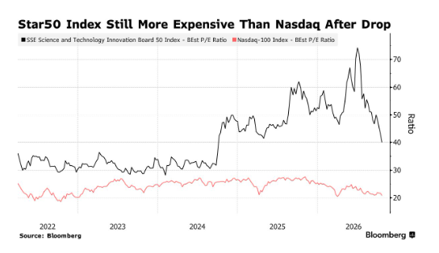
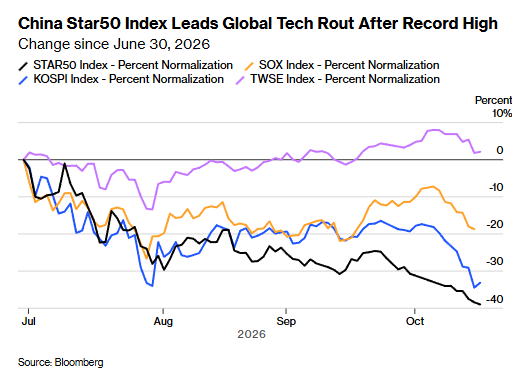
背景与关键数据
- 科创 50：上交所科创板中市值和流动性最大的 50 家公司，偏半导体、设备、生物医药等"硬科技"，被 Bloomberg 称作"中国版纳斯达克"。创业板指则是深交所创业板的代表指数，也包含不少硬件和新能源企业。
- 沐曦股份、摩尔线程：国产 GPU（AI 算力芯片）公司（我的补充：常被视为"国产替代英伟达"叙事的代表）；Bloomberg 说它们在此期间市值都缩水约一半。
- 预期市盈率（forward P/E，图中写作 BEst P/E）：股价 ÷ 未来 12 个月预期利润。2026 年 6 月 30 日科创 50 的预期市盈率超过 80 倍，意思是"按预期利润，需要 80 年才回本"，只有利润高速增长才撑得住。
- 沪深港通（北向/境外资金）：外资通过香港买卖 A 股的渠道。三季度估计净流出约 900 亿元人民币（约 135 亿美元，原文口径）——说明外资也在撤。
- GAM 的观点：
- 技术性回调 = 股价跌了，但估值水平依然不便宜，不代表"值得买"；
- 真正的价值机会，要等股价再跌 30%–50%；
- 政府可以推动技术发展，但无法保证投资者持续愿意为之付高价。
图片解读
图 1（Star50 Index Still More Expensive Than Nasdaq After Drop，科创 50 下跌之后仍比纳斯达克贵）
- 画法：两条线，黑线是科创 50 的预期市盈率，红线是纳斯达克 100 的预期市盈率；横轴 2022–2026，纵轴是倍数（Ratio）。来源 Bloomberg。
- 读数（估计值）：
- 科创 50：2022–2023 年大致在 30–36 倍之间；2024 年内出现台阶式跳升到 45–50 倍；2025 年反复冲高到约 62 倍；2026 年冲到约 74 倍的峰值，随后急速回落，目前约 40 倍；
- 纳斯达克 100：全程在约 19–27 倍之间，目前约 21 倍。
- 信号：科创 50 从约 74 倍的高点掉到约 40 倍，但依然是纳斯达克 100 的近两倍。这就是文中说的"高估值成为最大负担"：价格已经砍了一大截，但便宜还谈不上。
图 2（China Star50 Index Leads Global Tech Rout After Record High，自 2026 年 6 月 30 日以来的变化）
- 画法：四条线都以 6 月 30 日为 0，看之后涨跌的百分比（Percent Normalization）。黑线 STAR50（科创 50）、橙线 SOX（费城半导体指数）、蓝线 KOSPI（韩国综合指数）、紫线 TWSE（台湾加权指数）。
- 读数（估计值）：
- 科创 50：一路向下，目前约 −40%；
- KOSPI（韩国，以存储芯片龙头为重）：9 月下旬还在约 −20%，10 月急跌到约 −35%，目前约 −34%；
- SOX（美国半导体）：10 月初曾回升到约 −8%，随后再度回落到约 −19%；
- TWSE（台湾）：基本围绕 0 上下，目前约 +2%。
- 信号：这是一轮全球性的科技/半导体回撤，不只发生在中国；但中国（科创 50）和韩国最惨，台湾反而撑住了。我的推测：台湾指数权重集中在代工龙头，市场对其订单和利润的"确定性"定价更高，而国产芯片更依赖"未来叙事"，估值缓冲更少。
为什么重要 / 对市场和经济的含义
- 政策能托底，托不了估值：Bloomberg 的最后一句话很关键——产业战略再重要，也不保证股价。这和前几天"国家队买沪深300ETF"的信号可以放在一起看：官方可以挡住指数的急跌，但不能把一个 80 倍市盈率的板块重新推回去。
- 科技泡沫的"定价重置"：80 倍 → 40 倍，即使利润一分钱不变，股价就腰斩。这就是估值压缩。
- 国际资金的态度：外资三季度净流出约 135 亿美元，说明海外投资者在重新评估"中国 AI"的风险回报比，而不是简单抄底。
- 和帖 1 联系起来看：科技杀完估值，消费又没有明确的盈利拐点；国内资金缺少一个"明确的避风港"，所以更偏爱现金流、红利和防御品种。
- Jason 在这条里想强调的，我的推测是：别把"行业重要"误当成"股票便宜"。
延伸知识
- 好行业不等于好股票：互联网在 2000 年的确改变了世界，但思科这样的龙头股在 2000 年峰值之后，花了二十多年才收复当时的最高点。原因是 2000 年的股价已经把未来二十年的好消息提前付完了。AI 是不是真的赚钱是一回事，当前价格是否已透支预期是另一回事。
- "技术性回调"和"价值机会"的区别：前者是"价格从太高的位置回落了一些，但仍然高于合理水平"，后者是"价格已经低于内在价值"。判断方法之一，是看跌完之后估值有没有回到历史区间——图 1 里科创 50 的 40 倍，仍远高于它 2022–2023 年的 30 多倍区间，也远高于纳斯达克的 21 倍。
帖 6 ｜ ZeroHedge：特朗普豁免对俄新制裁，为什么？（13:03 PDT）
据 ZeroHedge 转述，特朗普周五签署行政命令，豁免了一部分本应对俄罗斯实施的新制裁和高额关税；Jason 的疑问是：如果这件事对油价的缓解其实有限，那为什么还要这样做？同一时间，乌克兰总统泽连斯基在欧盟峰会上警告说，一旦乌克兰失败，可能有 2,000 万乌克兰人逃往欧洲。读全文收起
帖子原文
zerohedge： 如果俄罗斯部分制裁取消只能"小量"缓解油价，特朗普为什么要这么做？泽连斯基表示一旦乌克兰沦陷，将有2000万人逃往欧盟。 标签：其他国家经济
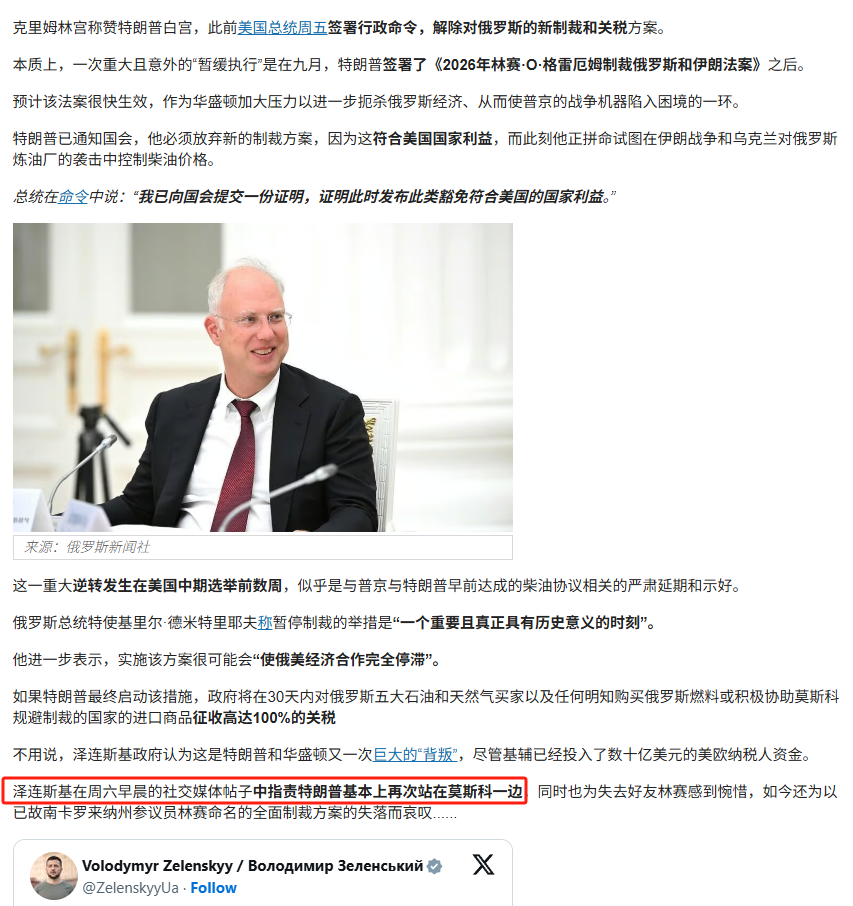
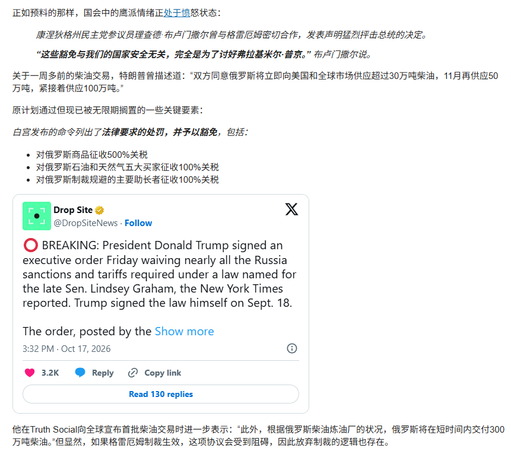
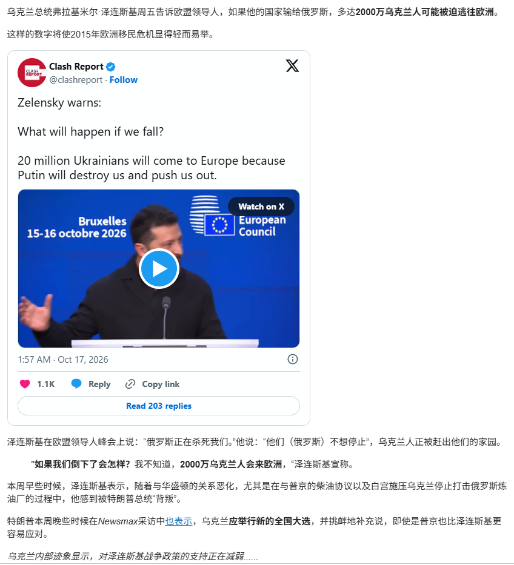
背景与关键数据
说明：以下事实陈述来自 ZeroHedge 文章（经中文翻译后的截图）。ZeroHedge 的风格偏重冲突性和质疑性叙事，建议与主流媒体交叉核对；我这里只转述，不做评判。
- 发生了什么：
- 克里姆林宫称赞特朗普的白宫此前（周五）签署行政命令，解除对俄罗斯的新制裁和关税方案；
- 一次重大且意外的"暂缓执行"发生在 9 月，也就是特朗普签署《2026 年林赛·O·格雷厄姆制裁俄罗斯和伊朗法案》之后；这部法案以已故的南卡罗来纳州参议员林赛·格雷厄姆命名（截图里 Drop Site 的推文说，特朗普 9 月 18 日亲自签署了该法）；
- 预期法案本会很快生效，用来向俄罗斯施压；但特朗普已通知国会，他必须放弃制裁，因为这"符合美国国家利益"——他在命令中说，已向国会提交一份证明，称此时发布这类豁免符合美国国家利益；
- 文章认为，这是"美国中期选举前数周"的一次重大逆转，似乎与普京和特朗普早前达成的柴油协议相关。
- 被豁免的具体处罚（图 2）：对俄罗斯商品征收 500% 关税；对俄罗斯石油和天然气五大买家征收 100% 关税；对帮助俄罗斯规避制裁的主要助长者征收 100% 关税。若特朗普最终启动，政府将在 30 天内对这些国家和任何明知购买俄罗斯燃料或积极协助规避制裁的国家的进口商品征收高达 100% 的关税。
- 柴油协议的数字（图 2，来自特朗普在 Truth Social 上的说法）：俄罗斯将立即向美国和全球市场供应超过 30 万吨柴油，11 月再供应 50 万吨，随后供应 100 万吨；在宣布首批柴油交易时又说，根据俄罗斯炼油厂的状况，俄罗斯会在短时间内交付 300 万吨柴油。文章补充：如果格雷厄姆制裁生效，这项协议会受到阻碍，所以"放弃制裁"也有这样的逻辑。
- 我的粗算（我的补充）：1 吨柴油大约相当于 7.45 桶。30 万吨约 220 万桶，100 万吨约 750 万桶，300 万吨约 2,200 万桶。全球每天的柴油/馏分油消费量大约 2,800 万桶，美国自己每天约 400 万桶——所以 300 万吨相当于全球不到一天的消费量、美国大约五到六天的用量。这就是 Jason 说的"小量缓解"：对整体价格有影响，但不足以扭转局势。
- 各方反应：
- 俄罗斯总统特使基里尔·德米特里耶夫称这是"一个重要且真正具有历史意义的时刻"，并说如果实施原方案，很可能"使俄美经济合作完全停滞"；
- 美国国会鹰派非常愤怒：康涅狄格州民主党参议员理查德·布卢门撒尔说，这些豁免"与我们的国家安全无关，完全是为了讨好弗拉基米尔·普京"；
- 乌克兰：泽连斯基政府认为这是特朗普和华盛顿又一次"巨大的背叛"，周六早晨在社交媒体上指责特朗普"基本上再次站在莫斯科一边"，同时也为失去好友格雷厄姆感到惋惜。
- 泽连斯基在欧盟峰会上的话（图 3，布鲁塞尔 10 月 15–16 日）：他说"俄罗斯正在杀死我们"，"他们不想停止"；"如果我们倒下了会怎样？我不知道，2000 万乌克兰人会来欧洲"，这个数字"将使 2015 年欧洲移民危机显得轻而易举"。他本周还表示，因为柴油协议和白宫施压乌克兰停止打击俄罗斯炼油厂，他感到被特朗普"背叛"；特朗普在 Newsmax 采访中则说乌克兰应举行新的全国大选，并说"即使是普京也比泽连斯基更容易应对"。文章末尾说，乌克兰内部迹象显示对泽连斯基战争政策的支持正在减弱。
图片解读
图 1（文章前半部分的中文截图）
- 内容：克里姆林宫称赞特朗普"解除对俄罗斯新制裁和关税"；9 月签署格雷厄姆法后"暂缓执行"；特朗普向国会提交"符合美国国家利益"的证明；配图是俄罗斯总统特使基里尔·德米特里耶夫（图片来源：俄罗斯新闻社）；后面讲时间点（中期选举前数周）、德米特里耶夫的评价、100% 关税条款，以及泽连斯基政府对"背叛"的反应；红框框出的是"泽连斯基在周六早晨的社交媒体帖子中指责特朗普基本上再次站在莫斯科一边"这一句——这是 Jason 特意标出来的重点。
- 末尾嵌入了泽连斯基的 X 帖子（@ZelenskyyUa）。
图 2（文章中段）
- 内容：国会鹰派的愤怒（布卢门撒尔的话）；一周多前的柴油交易数字（30 万吨/50 万吨/100 万吨）；原计划中已被无限期搁置的关键要素——500% 关税、对前五大买家 100% 关税、对规避者 100% 关税；嵌入 Drop Site（@DropSiteNews）的推文：10 月 17 日 15:32 的"突发新闻"，称特朗普周五签署行政命令，豁免了格雷厄姆法下几乎所有对俄制裁和关税（引述《纽约时报》）；最后是 Truth Social 上"300 万吨柴油"的说法与"放弃制裁的逻辑"。
图 3（文章后段）
- 内容：泽连斯基周五向欧盟领导人说，如果乌克兰输给俄罗斯，多达 2000 万乌克兰人可能被迫逃往欧洲；嵌入 Clash Report 的推文（视频，背景写着"Bruxelles 15–16 octobre 2026 / European Council"）："Zelensky warns: What will happen if we fall? 20 million Ukrainians will come to Europe because Putin will destroy us and push us out."；之后是特朗普在 Newsmax 的"应举行大选"言论；文章末句说乌克兰内部迹象显示对泽连斯基战争政策的支持正在减弱。
为什么重要 / 对市场和经济的含义
- 能源与通胀：帖 4 的汽油图说明，美国司机已经多付了约 830 亿美元，而且越晚解封霍尔木兹海峡越多。所以特朗普有强烈的政治动机在中期选举（2026 年 11 月 3 日）前压低油价，尤其是柴油——柴油直接影响货运成本，会传导到所有商品价格。
- Jason 的问题怎么理解（我的推测，不代表他的明确观点）：如果 300 万吨柴油对全球供需几乎是"小水滴"，那么豁免制裁的真正收益可能不全在价格，而在政治信号：①选举前让选民看到"在努力压油价"；②和普京的谈判筹码；③对乌克兰和欧洲施压，推动停火或让欧洲更多承担责任。泽连斯基"2,000 万难民"的警告，恰好是把乌克兰失败的代价指向欧盟，这说明美欧的利益诉求正在分叉。
- 对市场：①制裁松绑会让俄罗斯石油和柴油更顺畅进入全球市场，对能源价格偏空，但幅度有限；②地缘政治风险溢价上升（盟友分裂、选举政治介入制裁），对欧洲资产、欧元和防务股都有情绪影响；③"500%/100% 关税"这种大杀器被无限期搁置，说明美国自己也担心制裁反噬通胀。
- 要小心的地方：这条内容大量依赖 ZeroHedge 和社交媒体转述，部分表述（如"背叛""讨好普京"）带有强烈立场。具体豁免范围和法律细节，建议再对照主流媒体和白宫原文。
延伸知识
- 次级制裁/次级关税：不直接罚俄罗斯，而是罚"买俄罗斯能源的第三国"。例子：2025 年 8 月，美国曾因为印度购买俄罗斯石油，对印度额外加征 25% 关税（叠加后总计 50%）。这类工具威力大，但也最容易误伤盟友和全球供应链，所以经常被拿来当谈判筹码、而不是真的执行。
- 油价与选举：2022 年中期选举前，美国汽油价格一度逼近每加仑 5 美元，拜登政府宣布从战略石油储备（SPR）释放 1.8 亿桶，创历史最大规模。石油价格对选民情绪的影响，是能源政策里一条老规律。
- 柴油为什么特殊：柴油是卡车、火车、船舶和农机的主燃料，价格上涨会传到几乎所有商品。俄罗斯是全球重要的柴油出口国，而乌克兰无人机打击俄罗斯炼油厂，恰恰进一步削减了全球柴油供应——这是"想压油价"和"打击俄罗斯"两个目标相互冲突的地方。
帖 7 ｜ 长文《康、雍这次对话中的财政秘密》：税基被特权掏空，谁来动手改革？（14:14 PDT）
Jason 借《雍正王朝》第 4 集康熙和雍正的一段对话，讲一个很古老的财政道理：税收之所以年年下降，不是因为经济不好，而是因为免税特权保护了有钱有地的人，把负担推给了小户；而想改革的人要丈量土地、按地纳税，却发现"税基本身就是最大的阻力"，所以往往得交给一个没有利益牵扯的"新人 / 孤臣"去做。读全文收起
这是一篇知识星球"长文"（article）。我读到了完整正文和全部 21 张配图（均为《雍正王朝》第 4 集的视频截图，带字幕）。页面上正文重复了几遍，下面只转写一遍。配图下面我补了字幕文字，方便搜索和阅读。
帖子原文
康、雍这次对话中的财政秘密
这部剧确实很经典——
字幕：国库亏空竟达一千二百万两白银
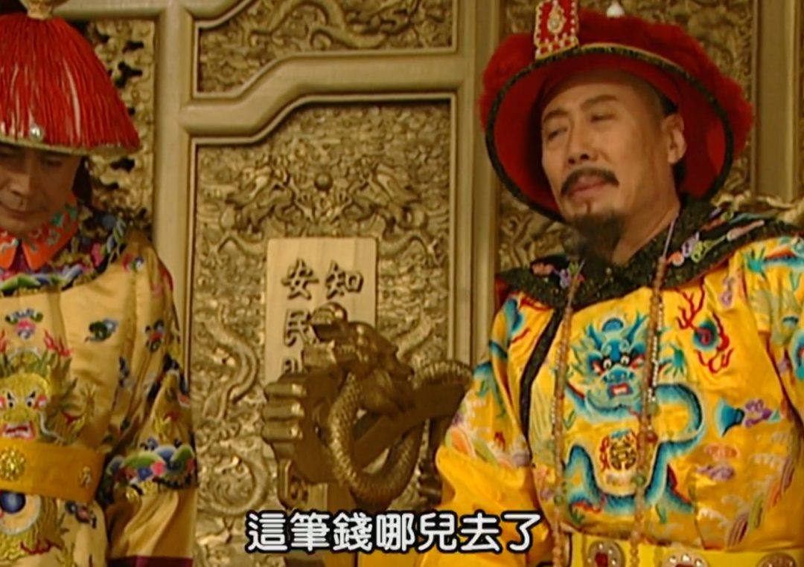
字幕：这笔钱哪儿去了
（第三集剧照）
尤其是第四集开头那几分钟，康熙和雍正的对话。
（背景是雍正下江南为赈灾筹款，看到民生艰辛，于是让盐商出了血，盐商的背后是其他阿哥撑腰，因为出血的200万两中一半本来是要给阿哥们的）
康先调侃了雍（治标不治本）：
字幕：一次可以，两次行吗
然后感叹（财政压力大）——
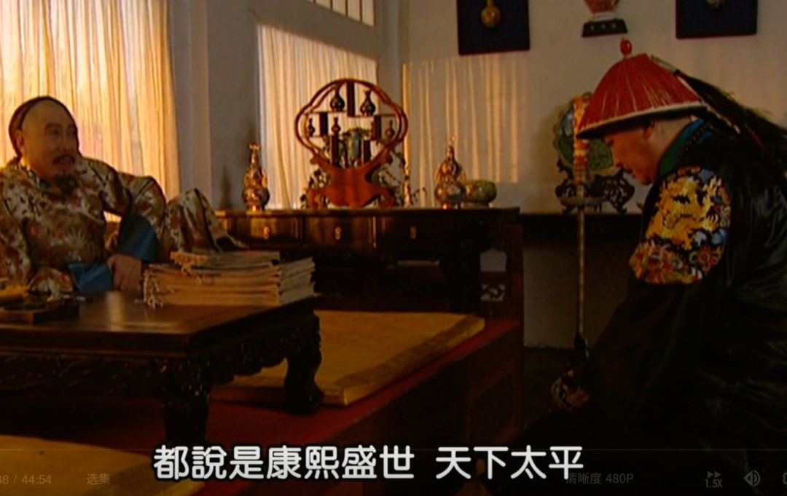
字幕：都说是康熙盛世，天下太平
字幕：而国家的税收呢，却是年年减少
也是出个题考考雍的洞察力。
雍说：
字幕：那些有钱的士绅人家
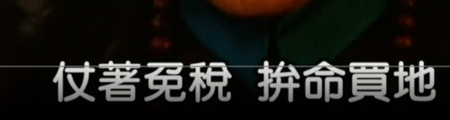
字幕：仗着免税，拼命买地
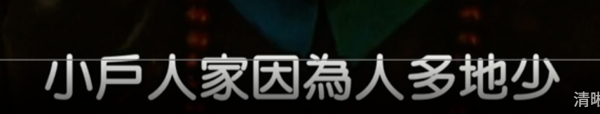
字幕：小户人家因为人多地少
字幕：付不起丁税
字幕：也就甘愿贱价卖了田土
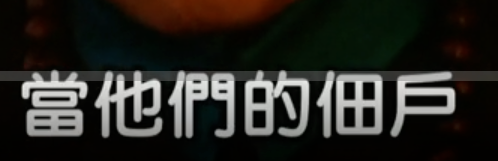
字幕：当他们的佃户
字幕：土地年年兼并，贫富日益不均
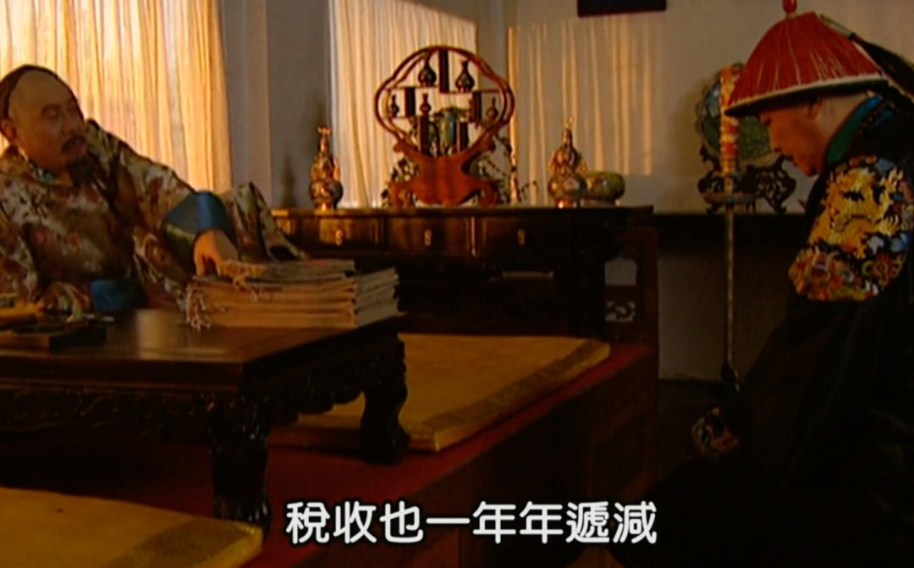
字幕：税收也一年年递减
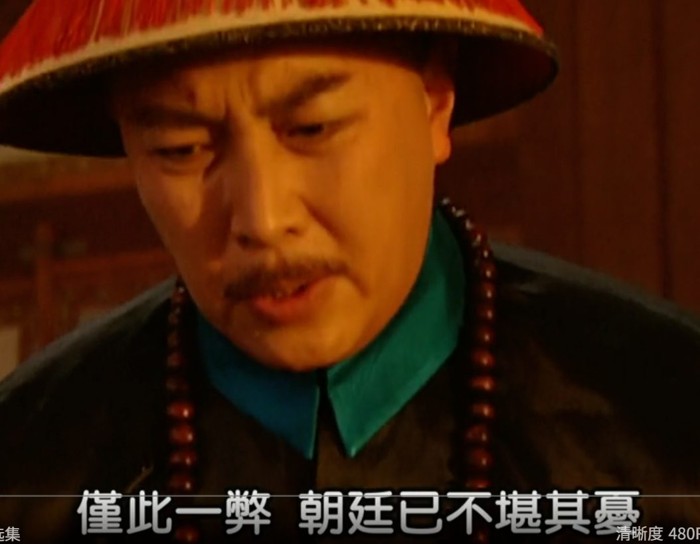
字幕：仅此一弊，朝廷已不堪其忧
雍正"解释"了为什么看起来似乎一切都好，但税收却凋零的原因。在于制度庇护了"一部分人"，这部分人"挤出"了普通人的利益，然后一条链内部瓜分。
雍敏锐的看到了税制不公平，人头税的对象，普通人负担不起；而资产对应的大户们却免税，税制在变相鼓励"大鱼吃小鱼"，那么铁定税收要一年比一年少啊。
肥的是指定的那部分人啊。
雍正能说出这段话，在康熙来看，表的是，"我不在这一堆人背后"，不然正常的搪塞应该是打太极，把锅甩到基层能力上面去，甩到天灾上面去。
所以康熙也肯定了——
字幕：你能看到这个弊端；画面上叠加的弹幕：这段分析放在现在都适用
字幕：说明你肯用心思
字幕：其实朕何尝不清楚
字幕：朕几次想丈量全国的土地
字幕：按土地纳税，可以缓冲一下
字幕：可层层报上来的数字都是假的
我们常说阻力、阻力，什么是阻力？
康熙虽然被财政压迫，想做改变，但也知道里面的阻力是哪些。这些阻力，很多都和自己有旧情或者有功，有时候不一定下得去手。
更关键的是，自己这个位置更适合权衡。（这当然是首要利益）
他想丈量土地作为税基，而土地兼并愈演愈烈的推手们，不愿意配合。他这个想法就很难推行。
因为税基正是他们自己，那报的数字肯定要少啊。谁会和自己的钱包过不去。
所以要处理这个财政难题，得由一个没有那么多权衡考量、没有那么多利益牵扯的"角色"。
这些阿哥们不爽，也是阿哥们内部的博弈。
字幕：儿臣大不了做个孤臣就是了；画面上叠加的弹幕：原来这话是在这等着他
好剧啊。
要丈量土地，也得新人来弄。
看懂了吗？
背景与关键数据
- 剧情背景：雍正（当时还是四阿哥）南下为赈灾筹款，逼盐商"出血"200 万两，而盐商背后是其他阿哥撑腰——这笔钱本来有一半是要给阿哥们的。康熙先说"一次可以，两次行吗"，意思是这种"敲一笔"的办法治标不治本，然后感叹国库亏空竟达 1,200 万两白银，问"这笔钱哪儿去了"，借机考雍正的洞察力。（我的补充：这些数字是电视剧的戏剧化表达，不能当严格史料。但税基被侵蚀、土地兼并、特权免税、数据层层造假这些结构性问题，在中国历史上是真实存在的。）
- 雍正的回答，拆成五步：
- 有钱的士绅家庭仗着免税，拼命买地；
- 小户人家人多地少，丁税（按人头收的税）交不起；
- 交不起就只能低价卖地，反过来给大户当佃户（租地种田的农民）；
- 土地越来越集中，贫富差距越来越大；
- 免税的地越多，应税的地越少，国家税收就一年比一年少。
- 丁税/人头税：按人口收，不管你有没有地，所以穷人负担重；与之对应的是按土地和财产收的税。当税制偏向"收人头、免大户"时，税负是累退的——越穷承担的比例越高。（我的补充：清代的士绅阶层确实在役与赋上享有"优免"。）
- 税基：能被征税的对象总量，例如应税土地、应税收入。税基越窄，同样的税率收上来的钱越少。
- "层层报上来的数字都是假的"：地方官和大户合谋少报田亩（历史上叫"隐田"），朝廷拿不到真实数据，也就没法按真实土地征税。这是典型的信息不对称 + 委托代理问题：负责上报的人恰好是被征税的人。
- Jason 的解读（文中要点）：
- 雍正敢讲出这套分析，说明他"不在这一堆人背后"。否则正常的搪塞是打太极：甩锅给基层能力或天灾；
- 阻力是什么：改革者很清楚阻力来自哪里，而这些人往往与自己有旧情或功劳，不好下手；
- 皇帝的位置更适合权衡，所以他自己动手有成本，而新人（没有那么多牵扯的角色）更合适；
- "要丈量土地，也得新人来弄"，这也是"孤臣"的意义。
- 弹幕说明：图 15 和图 21 上的两句话（"这段分析放在现在都适用""原来这话是在这等着他"）是视频网站的观众弹幕，不是剧中字幕。后一句的意思大概是：康熙说了一大串，其实是在等雍正主动说出"我愿意做孤臣"（我的理解：这为剧情里让雍正去办清查国库欠款这件得罪人的差事铺了路）。
图片解读
21 张图都是《雍正王朝》第 4 集的视频截图（播放器界面显示"雍正王朝 04"，进度约在 4 分钟到 5 分钟左右，清晰度 480P），主要有两种类型：
- 完整画面截图（图 1–6、10、12–15、18–21）：康熙（穿龙纹黄袍，图 1–2 坐在龙椅上，图 3、4、13 靠在榻上，面前堆着一摞奏折，图 15 是近景）和雍正（戴红缨帽，跪着或站着回话）的对话镜头，字幕就是上面逐条记录的台词；图 5、6、10、12、14、21 是雍正的近景特写；图 18–20 是康熙起身、雍正跪地回话的画面。
- 字幕条截图（图 7、8、9、11、16、17）：只截了画面底部的一行字幕，用来把对话里较长的句子完整贴出来。
整体信息是：这一段对话本身的台词，已经把"免税特权 → 土地兼并 → 税基萎缩 → 财政亏空 → 改革难"的链条讲完了，Jason 只是用文字再解说一遍。
为什么重要 / 对市场和经济的含义
- 这篇不是在讲历史，而是在讲一个"可以搬到任何时代"的财政逻辑：谁是税基，谁就会成为改革的阻力；谁有特权，税负就会被推给没有议价权的人；数据靠被征税的人自己上报，数字一定会"缩水"。
- 把它和今天前面几条放在一起读（我的推测，Jason 没有明说）：
- 帖 4 讲美国政府的利息账单和债务比率；
- 帖 3 讲日本家庭资产搬家，背后是整个财政和金融体系的再平衡；
- 帖 1、2、5 讲中国的内需和资产价格；
- 当整个体系的"钱"变紧时，最终都会回到三个问题：谁交税？谁被免税？谁有动力去动这块蛋糕？
- 为什么放在最后：前面 6 条都是数据和新闻，这一条是"思维方式"。Jason 用一句"看懂了吗？"收尾，说明他希望读者自己把剧情和现实对上号；他没有指明具体对应哪个国家或哪项政策，我在这里也不替他下结论。
- 对投资的含义：财政压力大的国家，往往会出现**"临时性摊派"（一次性征收、新增税费、行业特别税）和对特权群体的税制改革**两类政策。前者治标不治本，后者阻力大但长期更有效——作为投资者，要留意哪些行业是"税基"（被征税的对象）、哪些是"特权群体"（被保护的对象），政策风向一变，两者的估值会有很大差别。
延伸知识
- 张居正的清丈和一条鞭法（明代）：万历初年，首辅张居正全国清查土地（清丈），并推行一条鞭法（把各种赋税和徭役合并折成银子，按田亩征收）。清丈之后，登记在册的土地明显增加，朝廷财政因此好转。但他一去世，就被清算、抄家——这是"改革者没有靠山就会被反噬"的经典案例，也正是"孤臣"的悲剧版本。
- 摊丁入亩（清雍正朝）：康熙五十一年（1712 年）曾宣布"盛世滋生人丁，永不加赋"，固定了人丁税的额度；雍正年间进一步把丁银摊入田赋，"有地多缴、无地少缴或不缴"，大幅减轻无地农民的负担。同期还有"火耗归公""养廉银"等措施，目的都是把地方上的灰色收入变成制度化收入，缩小特权的空间。
- 今天的对应概念：
- 税基侵蚀（tax base erosion）：通过各种减免、漏洞和避税安排，让应税基数越来越小；
- 分利集团（distributional coalitions）：经济学家曼瑟·奥尔森指出，少数组织良好的利益集团会比大多数分散的普通人更能争取到特权，时间越长，制度越僵化；
- 类比：一个小区的物业费。如果有些业主长期免交，其他业主越交越多，物业维护经费一年比一年少，物业只好一次次临时摊派（治标）；想要按房屋面积重新核算（丈量土地），就得先得罪那些拥有最大面积的业主——而这些业主往往还是业委会的成员。
今日全图索引
| 帖号 | 时间（美西，PDT） | 主题 | 标签 | 图片文件名 |
|---|---|---|---|---|
| 1 | 10-17 12:13 | JPM：上海路演听到的中国消费真实情绪，盈利下修未完 | 经济数据 | post1_img1.png、post1_img2.png |
| 2 | 10-17 12:20 | 高盛：中国三季度 GDP 实时预测 4.2%，出口强、消费弱 | 经济数据 | post2_img1.png |
| 3 | 10-17 12:28 | JPM：日本家庭存款搬进国债、股票和基金 | 其他国家经济 | post3_img1.png |
| 4 | 10-17 12:43 | Bloomberg：8 月美债外资持仓回升，利息账单与家庭成本压力 | 其他国家经济 | post4_img1.png、post4_img2.png、post4_img3.png、post4_img4.png |
| 5 | 10-17 12:55 | Bloomberg：中国 AI 概念股回撤最惨，科创 50 跌近 40% | A股 | post5_img1.png、post5_img2.png |
| 6 | 10-17 13:03 | ZeroHedge：特朗普豁免对俄新制裁，泽连斯基警告 2000 万难民 | 其他国家经济 | post6_img1.png、post6_img2.png、post6_img3.png |
| 7 | 10-17 14:14 | 长文《康、雍这次对话中的财政秘密》（《雍正王朝》剧照 21 张） | （无标签） | post7_img1.png … post7_img21.png（共 21 张，依次编号） |